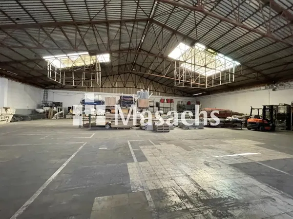
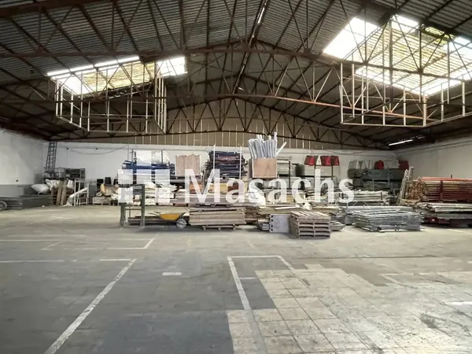

Plano · tocar un número de la lista lo marca acá
Letras: condiciones go/no-go · o: obra necesaria · números: lo que hay que medir o confirmar · c: lo que el chequeo de circulación marca hoy · trazos: el área o la franja de la cota · la línea azul: el largo libre a lo largo de la pista · ejes x/z: el origen de las cotas.
Condiciones go/no-go · si alguna sale mal, la nave se cae o hay que rehacer el layout
- Se decide en la visitaDecide: ≥ 6 m libres bajo jácenas, cerchas, luminarias e instalaciones en la vertical de la plataforma: plataforma a 3,2 m + 2,4 m del rider + 0,4 m de instalaciones (PROGRAMA §1). Si da menos, se baja la plataforma (a lo medido − 2,8 m), nunca el run-out.Altura libre medida con láser sobre la plataforma (m):
5 notas del layout
fuente de la cota: publicada (6 m libres). Fotos 01/02: apoyo de las cerchas en los muros a ≈2,75-2,9·h (≈5,7-6,0 m con h = 2,0-2,1) y cordón inferior peraltado hasta ≈7 m en el centro de la luz; los 6 m se toman como libre mínimo. Alero (eaveHeight 6,4): sin medida propia, es el mínimo del visor (libre + 0,35); fotos 01/02 ponen la cubierta sobre los muros a ≈ 5,1-6,2 m (≈ 5,9-6,2 en la esquina oeste), ver «match3: alero en foto 01»
riesgo: Libre bajo cercha junto al muro oeste: las fotos ponen el apoyo de las cerchas en ≈ 5,7-6,0 m. Si en x = 25,5-28,5 m hay menos de 6,0 m, la L4 queda corta de cabeza con la plataforma a 3,2 m; habría que bajarla a 3,0 m (rampa de 7,2 m) o correr la pista 1-2 m hacia la cumbrera. Medir el libre bajo el cordón inferior entre x = 15,7 y 28,5 m. Con el apoyo a ≈ 5,75-6,0 m (fotos 01/02, «match3: alero en foto 01»), entre los 5,6 m de la plataforma más el rider (3,2 + 2,4) y el apoyo quedan solo ≈ 0,15-0,4 m, contra los 0,4 m de servicios que pide la comprobación.
supuesto: Alero 6,4 m y cumbrera 9,3 m (pendiente ≈ 11°). La cumbrera sale del piñón de fotos 01/02 con 29,5 m de ancho. El alero no está medido: es el mínimo del visor con 6,0 m libres (6,0 + 0,35), y fotos 01/02 ponen la cubierta sobre los muros a ≈ 5,1-6,2 m (ver «match3: alero en foto 01»). Cerchas cada 5,76 m (5 vanos; 6 vanos de 4,8 m también encajan con foto 01, ver «match: cerchas») y sin pilares interiores.
supuesto: superficies: kicker de L1 rehecho como table-top real (antes: 2.6 m de despegue a 1,0 m, con «Table-top: mesa de 2 m a 1,0 m» + «Table-top: landing de 4 m (bajada 1,0 → 0 m, 14-21°; la mitad que sube queda dentro del kicker y la mesa)» haciendo de mesa y landing). Despegue de 2,2 m a 0,7 m: transición circular tangente al llano y tramo recto hasta el labio a 26°; mesa de 1,4 m a la cota del labio; knuckle de R 1,0 m, landing recto a 23,8° y transición de R 2,8 m al llano (2,4 m en planta); despegue de 2,4 m de ancho, mesa y landing de 2,8 m. Todo forrado de Neveplast con laterales de contrachapado pintado. v3 (QA): arranca a 2,5 m del pie de la rampa (antes 1,0: se salía de la curva cóncava de la ola directo al despegue; los parques dejan varios metros de recto antes de un kicker) y la mesa baja de 1,6 a 1,4 m para que la bajada recta en seco siga pasándola; el landing acaba a 8,5 m del arranque del llano (de 9,2). Velocidades con la física de los riders (ride-physics.js: rozamiento 0,09 en seco y 0,065 con niebla, normal g·cosθ + v²·κ en las transiciones, aire 0,004 1/m, entrando a 1,5 m/s desde la plataforma): bajando recto se llega al labio a 4,34 m/s (5,08 con niebla); para pasar la mesa hacen falta 4,17 m/s, el sweet spot (1/3 del landing) pide 4,66 y el pie del landing 5,86: recto se aterriza en el landing sin pasarse (con niebla, pasado el sweet spot), y frenando se cae en la mesa (seguro). Altura bajada de 1,0 a 0,7 m: con esta rampa a 1,0 m no se llega a pasar la mesa. Después quedan 5,6 m de llano antes de la transición del quarter: hay que frenar (derrape) a ≤ 4,8 m/s antes de subirlo para no salir por encima del coping.
supuesto: Foto 03: la caseta (fondo 2,2 m, puerta al norte) y el ventanal (cabeza 4,4 m, extremo este en x = 3,0) salen de proporciones medidas en la propia foto, sin depender de la cámara. Siguen estimados: el ancho de la caseta (4 m) y su sitio en la esquina este, el antepecho del ventanal (1,2 m; la parte baja la tapa la maquinaria) y su extremo oeste (x = 10, fuera de cuadro), y la altura de la caseta (3,0 m; la puerta da 2,7-2,9 m).
- Con margenDecide: ≥ 26,9 m en línea recta a lo largo de la pista (plataforma 2 m, rampa, llano y el final más largo, run-out ≥ 8 m), del muro detrás de la plataforma al muro después del final. Si da menos, se acorta la rampa o el llano y se baja la plataforma, nunca el run-out.Distancia del muro al muro, a lo largo de la pista (m):
1 nota del layout
supuesto: Lucernarios: centros a lo largo de la nave en z = 16,2 (este) y 19,8 (oeste), de 3,0 × 7,5 m, sacados de foto 01 con la cámara de 5,76 m (esquinas tomadas a mano, ±1 m). Si los vanos fueran de 4,8 m (cámara a 5,5 m) se irían ≈ 2-2,5 m más al fondo. El visor usa una sola position (0,5) para los dos faldones.
- Se decide en la visitaDecide: Dos salidas o más a la calle o a un espacio exterior seguro, con recorridos de evacuación ≤ 50 m (CTE DB-SI 3 §3, tabla 3.1), y sus puertas con ≥ 0,80 m de paso y 2,10 m bajo el dintel. Cada salida nueva solo vale si el muro da a la calle o a un patio con salida y la propiedad deja abrirla (las obras, en «Obra necesaria»).
- puerta peatonal de 1,2 m en la arista 0 (hueco 1, x 12,8 · z 0): nueva (hay que abrirla) · obra o1
- salida de emergencia de 1,2 m en la arista 2 (hueco 3, x 13,5 · z 28,8): nueva (hay que abrirla) · obra o2
Salidas confirmadas (cuáles, a dónde dan, ancho de paso):4 notas del layout
riesgo: La salida de emergencia por el testero de fondo depende de que ese testero dé a patio o vial. Si es medianera, no hay segunda fachada (los muros laterales parecen medianeras y el ventanal está en el mismo testero que la entrada) y la licencia puede pedir otra solución.
riesgo: Sin baños ni salida de humos: la fontanería y el saneamiento (4 duchas, 5 inodoros) y la evacuación de humos son obra nueva y tienen que pasar por la licencia.
riesgo: transitable (25/11, rp-evac-b; walk: de 1 error a 0): desde el rincón de la plataforma había 36,2 m hasta el primer punto con dos recorridos alternativos (CTE DB-SI 3 tabla 3.1: 25), porque la escalera bajaba al pasillo de retorno, que solo lleva hacia la entrada, y los recorridos se abrían en el vestíbulo (14,9, 7,0). La escalera de la plataforma se corre 0,8 m hacia el testero (arranca en z 20,8 y su meseta llega al testero de fondo, todavía junto al tablero) y sale la pantalla de 1,1 m entre el pad y la escalera: el pie queda en el paso del fondo, entre el pad y los trampolines, y desde ahí salen el retorno hacia la entrada y el paso hacia la salida de emergencia del testero (hueco 3). 22,8 m hasta dos recorridos y 30,8 m de evacuación (antes 42,6). Sin huecos nuevos ni nada del programa (el retorno sigue hasta el pie, 0,8 m más largo), pero cuenta con las dos salidas que este layout ya proponía, porque hoy la nave no tiene ninguna (el portón 0 no es salida, DB-SI 3 §6): los dos recorridos del pie de la escalera van a la entrada de público (hueco 1) y a la salida de emergencia del testero (hueco 3). Si se descarta la 3, 1 salida para 171 ocupantes y 43,2 m hasta la entrada (2 errores de walk, `exit count` y `evacuation max`); si se descarta la 1, 1 salida y 44,1 m hasta la 3.
supuesto: Salida de emergencia nueva en el testero de fondo, al final de un paso de 1,2 m entre la escalera de la plataforma y los trampolines (x = 12,9-14,1). También es la evacuación de la plataforma.
- Se decide en la visitaDecide: Huella ≥ 0,28 m, contrahuella de 0,13 a 0,185 m y 0,54 ≤ 2C + H ≤ 0,70 (CTE DB-SUA 1 §4.2.1); ancho ≥ 1,20 m (PROGRAMA; el CTE pide 1,00-1,10); tramos de ≤ 2,25 m sin descanso. Una escalera existente que no cumple no sirve para el público (gym o altillo): hay que rehacerla o poner otra.
- de la plataforma (escalera-plataforma): huella 0,29 m, contrahuella 0,17 m, ancho 1,39 m, tramo de 1,68 m sin descanso, sube 3,2 m
- existente (escalera-existente): huella 0,16 m, contrahuella 0,17 m, ancho 0,73 m, tramo de 3 m sin descanso, sube 3 m
Huella × contrahuella × ancho de la escalera existente (m):8 notas del layout
riesgo: Ancho incierto: las fotos dan 28-31 m (29 en foto 02), y la escalera de mano del fondo, si fuera estándar, daría 24 m. Si la nave mide 24 × 35,4 m, la pista cabe a lo largo con sitio de sobra, pero la franja de programa baja a ≈ 8 m y hay que volver al esquema largo y estrecho. Si mide 31 × 27,4 m, la pista de 26,9 m queda con 0,5 m de paso delante y hay que acortar el llano a 9 m. Hay que pedir el plano acotado y saber cuál de las naves de la parcela 03 es.
riesgo: transitable (25/11, rp-evac-b; walk: de 1 error a 0): desde el rincón de la plataforma había 36,2 m hasta el primer punto con dos recorridos alternativos (CTE DB-SI 3 tabla 3.1: 25), porque la escalera bajaba al pasillo de retorno, que solo lleva hacia la entrada, y los recorridos se abrían en el vestíbulo (14,9, 7,0). La escalera de la plataforma se corre 0,8 m hacia el testero (arranca en z 20,8 y su meseta llega al testero de fondo, todavía junto al tablero) y sale la pantalla de 1,1 m entre el pad y la escalera: el pie queda en el paso del fondo, entre el pad y los trampolines, y desde ahí salen el retorno hacia la entrada y el paso hacia la salida de emergencia del testero (hueco 3). 22,8 m hasta dos recorridos y 30,8 m de evacuación (antes 42,6). Sin huecos nuevos ni nada del programa (el retorno sigue hasta el pie, 0,8 m más largo), pero cuenta con las dos salidas que este layout ya proponía, porque hoy la nave no tiene ninguna (el portón 0 no es salida, DB-SI 3 §6): los dos recorridos del pie de la escalera van a la entrada de público (hueco 1) y a la salida de emergencia del testero (hueco 3). Si se descarta la 3, 1 salida para 171 ocupantes y 43,2 m hasta la entrada (2 errores de walk, `exit count` y `evacuation max`); si se descarta la 1, 1 salida y 44,1 m hasta la 3.
supuesto: Pista de 4 líneas de 3,2 m contra el muro oeste (x = 15,7-28,5). Pasillo de retorno de 1,8 m (x = 13,6-15,4, z = 1,9-20,0), centrado entre el borde del lounge y del pad (x = 13,5) y el margen de la red que mide park3d-walk (x ≈ 15,45), y escalera recta al costado este de la plataforma. El programa va en una franja de 13,5 m junto al muro este (x = 0-13,5).
supuesto: La recepción tiene el mostrador hacia el vestíbulo y la pared de fondo hacia la caseta. Entre las dos queda un paso de personal de 1,2 m que lleva a la oficina, al alquiler y a la escalera metálica del techo de la caseta. El ventanal le da luz por el sur.
supuesto: Salida de emergencia nueva en el testero de fondo, al final de un paso de 1,2 m entre la escalera de la plataforma y los trampolines (x = 12,9-14,1). También es la evacuación de la plataforma.
supuesto: La caseta existente (4 × 2,2 m) se usa de oficina, staff y botiquín, con ≈ 2,7 m libres bajo su forjado de 3,0 m. Su techo sigue de almacén (repuestos del alquiler y consumibles), con la escalera metálica existente.
supuesto: Entre la meseta de llegada de la escalera (x = 14,1-15,5) y el tablero (x = 15,7) quedan los 0,2 m de la franja de la pista; en obra se cubren con una chapa estriada que el visor no dibuja.
supuesto: plantilla Stoke Mountain adaptada: plataforma 3.2 m × 2.0 m; drop-in de 1.11 m en 3.1 m; 2 terraza(s) de 4.0 m que caen 5° unidas por drops de 0.67 m en 2.6 m; carril de transición en la línea 1 (bajada de 8.22 m, kicker Accelerator y 0 rollers de 0,3 m); 6 módulos a escala real por terraza (T1 cajones cortos, T2 cajón largo / rail / roller, down rail en el último drop), solo donde se llega con velocidad (µ 0,09); misma huella, mismos finales (run-out ≥ 8 m / quarter) y escalera; los módulos anteriores quedan en slope.legacyModules.
- Con margenDecide: Ningún pilar dentro de la pista; los de la franja de 0,2 m del murete y la red, forrados (el murete se corta en cada uno); el pasillo de retorno, ≥ 1,80 m libres con los pilares.Posición y sección de los pilares junto a la pista (m):
- Se decide en la visitaDecide: El ancho entre medianeras (cara de los pilares) que da para las líneas de la pista, su franja y el retorno de ≥ 1,80 m.Ancho interior entre caras de pilares (m):
1 nota del layout
riesgo: Ancho incierto: las fotos dan 28-31 m (29 en foto 02), y la escalera de mano del fondo, si fuera estándar, daría 24 m. Si la nave mide 24 × 35,4 m, la pista cabe a lo largo con sitio de sobra, pero la franja de programa baja a ≈ 8 m y hay que volver al esquema largo y estrecho. Si mide 31 × 27,4 m, la pista de 26,9 m queda con 0,5 m de paso delante y hay que acortar el llano a 9 m. Hay que pedir el plano acotado y saber cuál de las naves de la parcela 03 es.
- Se decide en la visitaDecide: Lo que no se ve en las fotos y puede cambiar la obra: puentes grúa, forjados que tienen que aguantar el gym, muros que habría que tirar, cubiertas de fibrocemento.Qué se vio (y qué papel hay que pedir):
1 nota del layout
riesgo: Cubierta de placas onduladas grises en una nave antigua: probable fibrocemento con amianto. Hay que pedir diagnóstico, porque puede obligar a cambiar la cubierta antes de abrir (coste y plazo).
Obra necesaria · lo que la nave no tiene hoy y la propuesta necesita: decisiones del usuario, a ver en la visita si se puede
- hueco nuevoObra: Entrada de público a nivel (≥0,80 m libres) al vestíbulo, con el mostrador a la derechaEn la visita: Que el paño de muro dé a la calle o a un espacio exterior seguro (si da a una nave vecina, solo vale como salida de planta, con un vestíbulo de independencia o un pasillo protegido: CTE DB-SI Anejo A), que en el hueco no haya pilares, bajantes ni instalaciones, y que la propiedad deje abrirlo.
- Es la entrada de público: el chequeo de circulación mide desde ella.
- Es una de las 2 salidas que cuenta el chequeo de circulación: sin ella quedaría una sola.
De dónde sale
fuente: propuesta: entrada de público a nivel (≥0,80 m libres) al vestíbulo, con el mostrador a la derecha
Visto: - hueco nuevoObra: Hueco nuevo en el testero de fondo (ciego en fotos 01/02), al final del paso de 1,2 m entre la escalera de la plataforma y los trampolines (x = 12,9-14,1)En la visita: Que el paño de muro dé a la calle o a un espacio exterior seguro (si da a una nave vecina, solo vale como salida de planta, con un vestíbulo de independencia o un pasillo protegido: CTE DB-SI Anejo A), que en el hueco no haya pilares, bajantes ni instalaciones, y que la propiedad deje abrirlo.
- Es una de las 2 salidas que cuenta el chequeo de circulación: sin ella quedaría una sola.
De dónde sale
fuente: propuesta: hueco nuevo en el testero de fondo (ciego en fotos 01/02), al final del paso de 1,2 m entre la escalera de la plataforma y los trampolines (x = 12,9-14,1)
Visto:
Medir y confirmar en la visita · 7, de las notas del layout
-
Detalle
medir en la visita:
de las cerchas (5,76 m en el layout; las fotos dejan ≈ 5,2-5,8 m).
Medido: -
Detalle
medir en la visita:
La lectura de ≈ 5,4-5,6 m en el muro este de foto 03 salía de la cámara anulada y de suponer la caseta de 3,0 m. Con cualquier cámara, el borde de arriba de la caseta (y ≈ 628) cae en el horizonte (≈ 629-640), así que foto 03 solo da alero ≈ 1,8 × la caseta. Fotos 01/02 también ponen el muro por debajo de los 6,4 m del layout (ver «match3: alero en foto 01»).
Medido: -
Detalle
medir en la visita:
Sin una cámara de 03 con posición no se puede comprobar el tramo de 2,8 m del layout, que no se cambia.
Medido: -
Detalle
medir en la visita:
Medido: -
Detalle
Ancho incierto: las fotos dan 28-31 m (29 en foto 02), y la escalera de mano del fondo, si fuera estándar, daría 24 m. Si la nave mide 24 × 35,4 m, la pista cabe a lo largo con sitio de sobra, pero la franja de programa baja a ≈ 8 m y hay que volver al esquema largo y estrecho.
Medido: -
Detalle
Libre bajo cercha junto al muro oeste: las fotos ponen el apoyo de las cerchas en ≈ 5,7-6,0 m.
inferior entre x = 15,7 y 28,5 m. Con el apoyo a ≈ 5,75-6,0 m (fotos 01/02, «match3: alero en foto 01»), entre los 5,6 m de la plataforma más el rider (3,2 + 2,4) y el apoyo quedan solo ≈ 0,15-0,4 m, contra los 0,4 m de servicios que pide la comprobación.
Medido: -
Detalle
Cubierta de placas onduladas grises en una nave antigua: probable fibrocemento con amianto.
Medido:
Circulación · lo que el chequeo marca hoy (CTE DB-SI 3, DB-SUA): ver en la visita si el paso real es así
- avisoescalera existente escalera-existente: contrahuellas de 0,167 a 0,167 m y huellas de 0,156 a 0,156 m (uso restringido: C ≤ 0,200, H ≥ 0,220)CTE DB-SUA 1 §4.1, §4.2.1 y §4.2.2 · peldaños de la escalera existente de la caseta (contrahuellas de 0,167 m y huellas de 0,156 m): de uso restringido (arriba no hay programa), la huella no llega a los 0,22 m de DB-SUA 1 §4.1; existente, se conserva (PROGRAMA §4) y queda como aviso (terrassa-canpalet)
- avisoescalera existente escalera-existente: 0,73 m de ancho útil (≥ 0,80 m en uso restringido)PROGRAMA §3 (DB-SUA 1 §4.2.2 tabla 4.1: 1,00-1,10 m); DB-SUA 1 §4.1 · escalera existente de la caseta con 0,73 m útiles, menos que los 0,80 m de una de uso restringido (DB-SUA 1 §4.1: arriba no hay programa; checker-3): existente, se conserva (PROGRAMA §4) y queda como aviso (terrassa-canpalet)
Fotos que conviene sacar
- Fachada y acera desde enfrente, con la calle a los dos lados (la llegada a pie y en coche, y dónde se aparca).
- Cada puerta (3: portón seccional, puerta peatonal, salida de emergencia) desde dentro y desde fuera, con el metro abierto en el paso libre y en la altura.
- La pared del arranque de la pista (detrás de la plataforma) de suelo a cubierta, con la jácena o la cercha de encima y el láser apuntando a su cara de abajo.
- El final de la pista: lo que hay después del run-out (muro, frente del altillo, salida) y el suelo de esa franja.
- Las dos medianeras de punta a punta, para contar pórticos y pilastras y ver si sobresalen.
- La cubierta y los lucernarios desde el centro de la nave, mirando a cada testero (para la luz del 3D y el estado de las placas).
- El suelo: estado, juntas, desniveles, sumideros y arquetas.
- El cuadro eléctrico, la acometida de agua y los desagües (vestuarios y aseos nuevos).
- El frente del altillo de punta a punta, y debajo: la altura libre, sus pilares y sus puertas.
- La escalera existente de lado, con el metro en una huella y una contrahuella, y su llegada arriba.
- A. Altura libre sobre la plataforma: una foto con la medida a la vista.
- C. Salidas y evacuación: una foto con la medida a la vista.
- D. Escaleras: peldaños, ancho y tramos: una foto con la medida a la vista.
- F. Ancho interior: una foto con la medida a la vista.
- G. Estructura, cubierta e instalaciones: una foto con la medida a la vista.
- o1. Obra necesaria (x 12,8 · z 0): el sitio desde dentro y, si se puede, desde fuera, con lo que hay detrás.
- o2. Obra necesaria (x 13,5 · z 28,8): el sitio desde dentro y, si se puede, desde fuera, con lo que hay detrás.
- Repetir desde el mismo sitio las fotos del anuncio de abajo (el móvil a la altura de los ojos, sin zoom): con la nave medida se vuelven a ajustar las cámaras y el plano.

